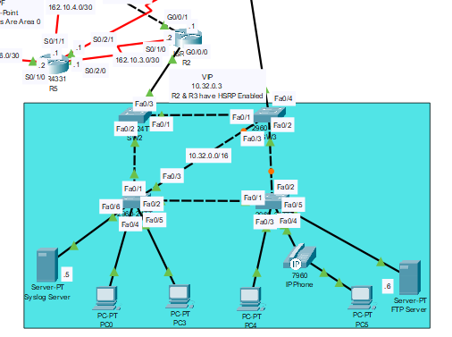
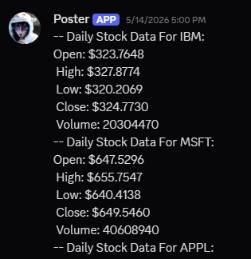
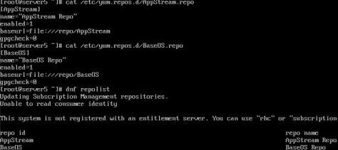
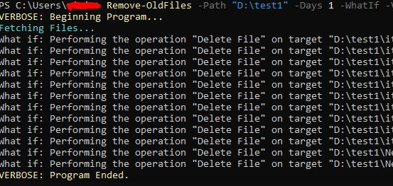

Overview
This portfolio gives an overview of several projects that I have created. My IT Certifcations can be found in my LinkedIn profile. Full documentation for projects can be found in my Github or LinkedIn.
This portfolio gives an overview of several projects that I have created. My IT Certifcations can be found in my LinkedIn profile. Full documentation for projects can be found in my Github or LinkedIn.

After passing my CCNA exam, I gained a solid foundation in networking concepts and technologies. I used that knowledge to create a big project that incorporates various networking devices and protocols. I cover topics like OSPF, VLANS, RSTP, IPv6, DHCP, PAT, Port Security, and more. This project allowed me to apply my skills and further deepen my understanding of networking principles. The full project documentation can be found here.

Using python, I created a discord bot that automatically sends messages to a discord channel. Using an API, I am able to send daily stock market information to the discord channel. This bot also appends data to a file stored on my computer, which allows me to keep track of the stock market data over time. Documentation for this project has not been created. Various other projects using Python can be found on my github.

For my RHCSA exam, I had to learn how to configure a RHEL 9 Enterprise Linux system. After I passed my exam, I created my own configration from scratch. I used a minimal install to ensure I had the bare essentials to run the server. I created local repositories, configured a webserver using a unique port and authorizing it with SELinux. I modified user permissions, configured autofs between two machines, and created shell scripts to automate tasks. Documentation can be found on my LinkedIn under "Projects".

I created several PowerShell modules that do certain tasks. One module deletes files that are older than a certain amount of days. Another module finds files that are large and displays the size and location on the drive. Another module syncs folders together. These modules have verbose, progress bars, and error handling implemented. Partial documentation can be found on my LinkedIn under "Projects". Full release of the code is underway and will be posted on my GitHub.